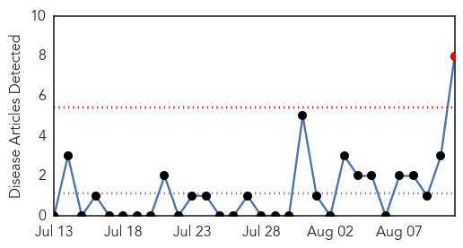
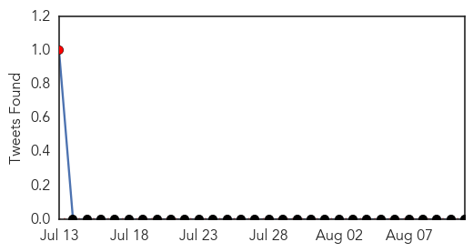
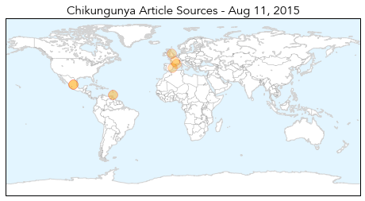
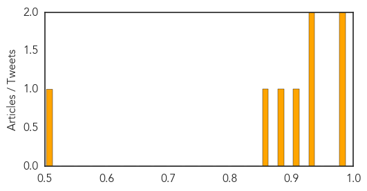

Toggle navigation
Early Warning
Daily Alerts
Chikungunya
Aug 11, 2015
Compare to:
-
Dengue Fever
Hemmorhagic Fever
Mold/Fungal Infection
Influenza
Meningitis
Pertussis / Whooping Cough
Middle East Respiratory Syndrome
Cholera
Hepatitis
Yellow Fever
Bubonic Plague
West Nile Virus
Swine Flu
Ebola
Measles
Unknown
Mumps
30 Day Trends
Web: 1
alerts
, 0
warnings
Twitter: 1
alerts
, 0
warnings
Top Articles:
0.984
Chikungunya case in Spanish man; Americas outbreak grows
0.977
Garland Resident Contracts Chikungunya in Mexico
0.937
British woman loses sight in one eye after being bitten by mosquito
0.931
Spain reports chikungunya case in Gandia man, acquired in Spain or France
0.909
Woman loses vision after mosquito bites spread infection
0.889
Spain reports first chikungunya case without travel history to endemic regions
0.864
First Chikungunya Case in Spain is Reported to WHO
0.524
Woman Loses Vision In Right Eye After Getting Bitten By Mosquitoes « CBS Atlanta
Top Tweets:
No tweets found for Aug 11, 2015
Web/News Articles

Tweets

Article Locations

Article Confidences
